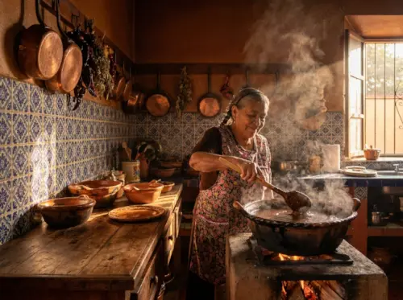

OUR HISTORY

Legend has it that Puebla’s famous mole was born from divine inspiration in the quiet kitchens of colonial convents. At Santo Mole, we honor that celestial heritage every single day. Using a secret family recipe passed down through generations, we slow-cook our mole with over thirty carefully selected ingredients, including rich Mexican chocolate, roasted chilies, and aromatic spices. Every dish we serve is a tribute to our roots, crafted to bring the true, comforting taste of a traditional Poblano home straight to your table.
OUR MENU
DID YOU KNOW?...
...that authentic Poblano Mole contains real Mexican chocolate?
...that Puebla is the birthplace of Mexico's most patriotic dish?
...that the famous "Cemita Poblana" has European roots?